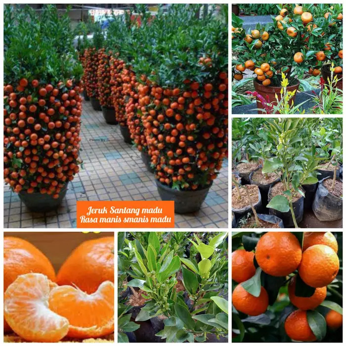
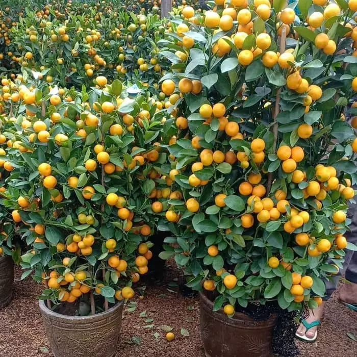
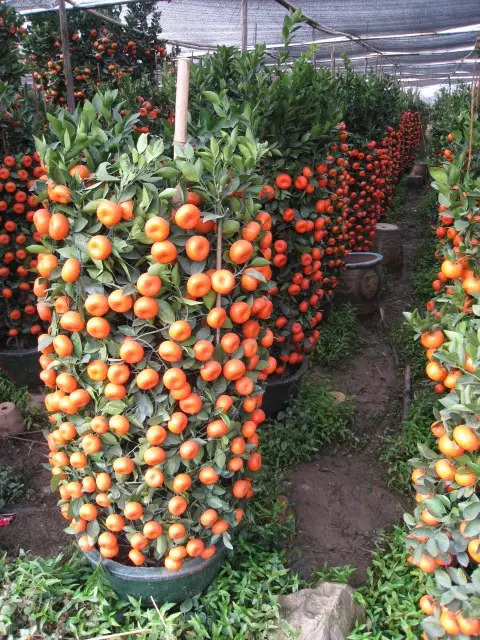
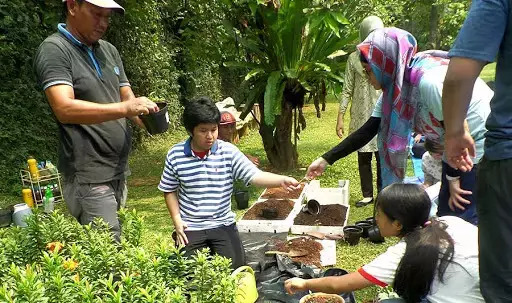
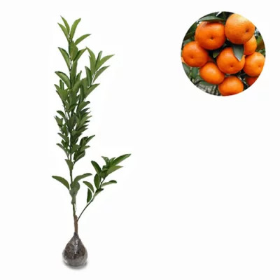
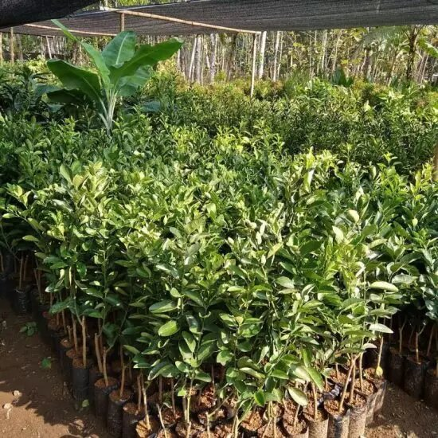
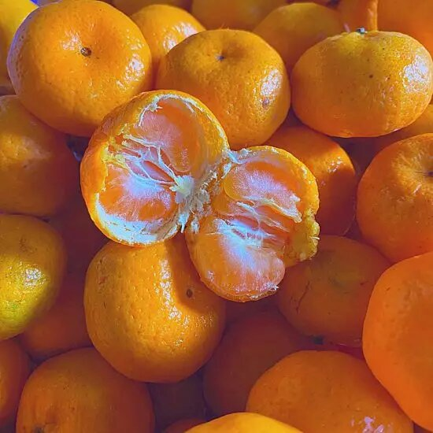

Kini Bibitnya Tersedia Namun Terbatas di Kebun Kami, di Jawa Timur
😎 APA SAJA SIH KEUNGGULANNYA? 😎
HEMAT WAKTU:
Okulasi yaitu menyambung bagian tunas bibit tanaman dengan tangkai tanaman jeruk yang pernah berbuah, jadi tidak seperti menanam biji yang menunggu waktu lama hingga belasan tahun untuk berbuah.
Hanya 1 – 3 tahun anda sudah bisa menikmati hasilnya. Enak gak tuh?? 😍
TIDAK BUTUH LAHAN LUAS:
Namanya juga Tabulampot (tanaman buah dalam pot), jadi anda tidak membutuhkan lahan luas untuk menanamnya. 😎
INVESTASI JANGKA PANJANG:
Dirawat hingga besar, dijadikan indukan, diperbanyak dengan cara pembibitan dan okulasi, bibit bisa dijual atau ditanam di kebun milik sendiri, supaya anak dan cucu kelak juga bisa ikut menikmati hasilnya.
Betapa bangga mereka kepada orang tuanya. 🥺
Hasil panen bisa dijual atau di konsumsi sendiri, gak perlu lagi beli jeruk santang madu di supermarket dengan harga ratusan ribu.
Hemat pengeluaran, nambah pemasukan. 🤑
BERKEBUN BERSAMA KELUARGA:
🔰 Mengisi Aktifitas WFH dengan merawat dan menyirami tanaman setiap pagi dan sore hari dapat menghilangkan kebosanan, terasa lebih seru, bebas stress, serta meningkatkan imun seluruh anggota keluarga. 😍
🔰 Sarana wisata edukasi dengan tema Cinta Lingkungan bersama keluarga. 🤩
🔰 Sebagai bentuk dukungan terhadap Program Penghijauan ‘1 Rumah 1 Pohon’, yang bertujuan menghasilkan oksigen sebagai pembersih udara sekitar, sangat bermanfaat bagi keluarga, ala – ala aktifis pecinta lingkungan kali ya. 😍
BERGARANSI:
Bibit yang kami kirim berukuran 30 s.d 60 cm, kondisi sehat, dan siap kirim seluruh Indonesia. Tak perlu khawatir karena kami berani memberikan jaminan GARANSI KIRIM BARU jika bibit jeruk yang anda terima mati.
Belanja Aman dan Nyaman hanya di Raja Bibit Super, Platform online pertama dan satu – satunya di Indonesia yang meraih 2x Penghargaan pada Kategori:
- ✅ “Perusahaan Terpercaya dan Diakui di Bidang Agrikultur / Pertanian.”
- ✅ “Pilihan Terbaik di Perusahaan Platform Online”
+++
Lebih dari 79.189 Bibit Kami Kirim Ke Seluruh Indonesia
{kind=link}
{kind=link}
{kind=link}
{kind=link}
Bibit Jeruk Santang Madu
100% Original
 AYO TUNGGU APALAGI!!
MARI KITA TANAM BIBIT JERUK SANTANG MADU DI RUMAH DAN NIKMATI KETIKA PANENNYA TIBA
BEBAS RESIKO, BISA BAYAR DITEMPAT (COD)
PENAWARAN SPESIAL HARI INI
BONUS BERGANDA
BELI 1 GRATIS 1
Kami Kirim 2 Bibit + Pupuk NPK
JANGAN TUNGGU SAMPAI KEHABISAN, STOK KAMI TERBATAS
UNTUK PEMESANAN SILAHKAN ISI DATA BAWAH INI
NOTE:
- Bibit Yang Kami Kirim adalah Bibit terbaik dan hasil sortir karena kami adalah penggemar budidaya tanaman juga
- Packing Aman dan Pakai Media Tanam Sehingga Aman sampai Tujuan
- Untuk pengiriman jarak jauh yang memakan waktu 3 hari atau lebih, kemungkinan beberapa daun rontok, layu dan kondisinya tidak 100% segar. Anda tidak perlu khawatir karena ini kondisi yang alami.
- Untuk itu, setelah paket diterima segeralah pindahkan ke media tanam yang lebih baik seperti polybag atau pot.